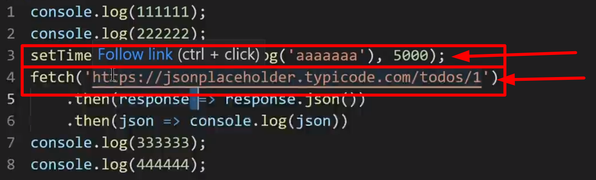

আসলে javascript যে ভাবে চলে ,
javascript একটা stake of frame mantain করে
আমরা জানি javascript এ দুই ধরনের কাজ হয়
1. Synchronize (যাদের execution এ কোন delay করানো যায়না )
2. Asynchronize (যাদের execution এ delay হয় বা করানো যায় )
js প্রথমে সবগুলা synchronize expression দের নিয়ে একটা stake of frame তৈরি করে blue box তারপর একটা একটা করে কাজ করে করে
তারপর Queue মানে হল , এটা এক ধরনের waiting লাইনের মত
js প্রথমে তার stake এর সব গুলা কাজ করে তারপর queue এর মধ্যে delay হওয়া কাজ গুলা তাদের সময় অনুসারে করে
যেমন , এখানে আগে red box এর বাইরের synchronize expression গুলাকে execute করবে ।
তারপর
 red box এর মধ্যে থাকা Asynchronize expression দের তাদের delay আনুযায়ী আগে পরে execute করে ।
অর্থাৎ synchronize expression গুলা চলে যাবে stake লিস্টে এক একেটা frame হিসাবে ।
আর Asynchronize expression গুলা চলে গেছে Queue(waiting/Delay ) লিস্টে message হিসাবে ।
Picture aabhi baki hain